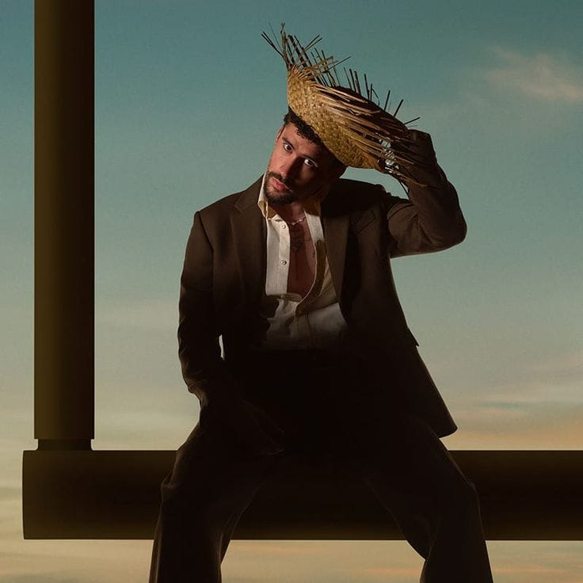
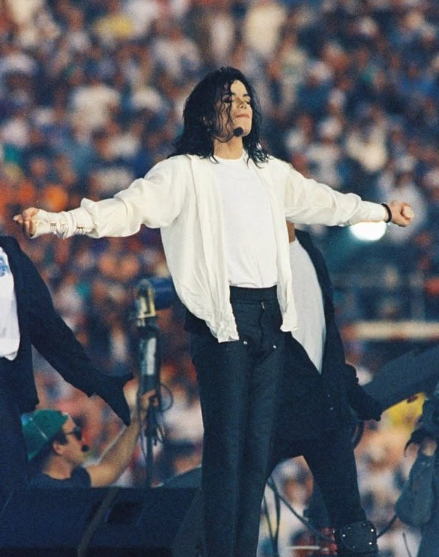
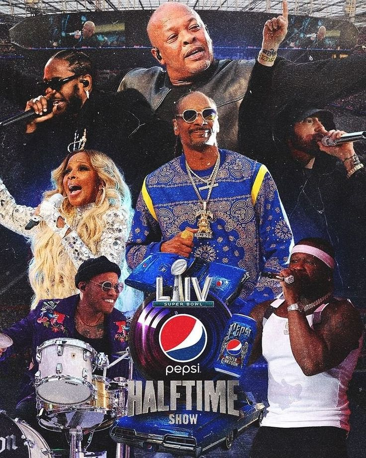

El Super Bowl es el escenario donde la música se vuelve leyenda. No solo se trata de Bad Bunny en 2026 o el Hip-Hop en 2022; es recordar a Michael Jackson reinventando el concepto en 1993, a Prince cantando bajo la lluvia en 2007 o a Rihanna elevándose sobre el estadio en 2023. Cada artista aporta su sello cultural, convirtiendo 15 minutos en un evento que paraliza al planeta.
ARTISTAS MAS VISTOS


